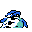

#225
Wimpod
BugWater
It startles at sudden noise and runs away It hides among damp rocks
Base stats Total 205
HP25
Attack35
Defense40
Speed80
Special25
Details
- Species
- Hippo
- Height
- 2'07"
- Weight
- 109.1 lb
- Catch rate
- 255
- Base exp
- 46
- Growth
- Medium Fast
Level-up moves
LevelMoveType
StartSand-AttackNormal
Lv 8Sand-AttackNormal
Lv 9Pin MissileBug
Lv 14Bug BiteBug
Lv 17BubblebeamWater
Lv 18Defense CurlNormal
Lv 23Leech LifeBug
Lv 25WaterfallWater
Lv 31X ScissorBug
TM / HM
TM06 ToxicTM12 Water GunTM16 Metal ClawTM32 Double TeamTM39 SwiftTM50 SubstituteHM03 Surf